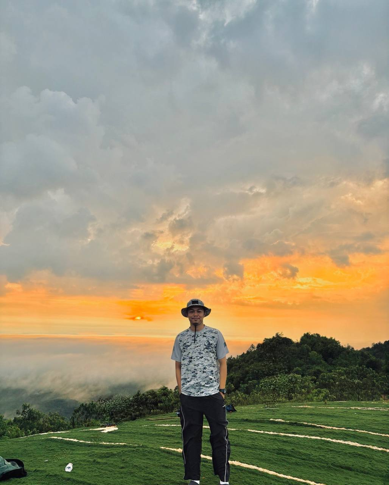
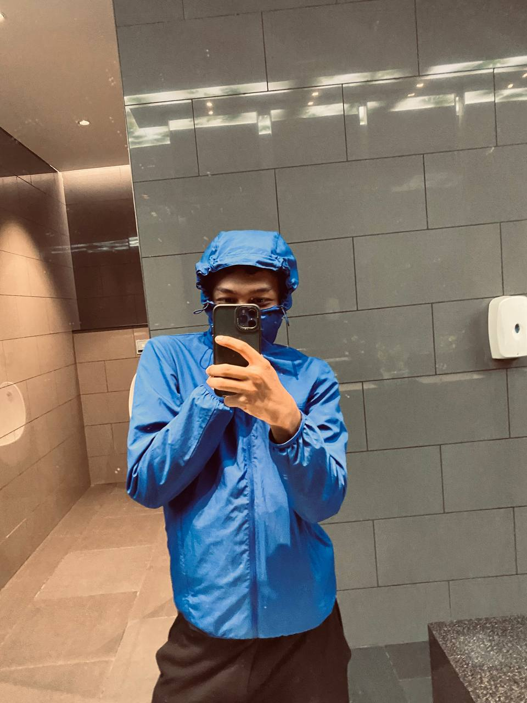

NABIL AL-HADIF


Hi.
Andrew Skurka is an American professional backpacker who is best known for his two long-distance hiking firsts—the 6,875-mile Great Western Loop and the 7,778-mile Sea-to-Sea Route. He was named the 2007 "Adventurer of the Year" by National Geographic Adventure (which described him as "a Gen Y version of Henry David Thoreau or John Muir") and the 2005 "Person of the Year" by Backpacker magazine.[1][2]
In November 2007, Skurka completed the Great Western Loop, a 6,875-mile journey that links together 5 long-distance hiking trails, 12 National Parks, and over 75 wilderness areas, which he hiked in 208 days, an average of 33 miles per day.[2][3] In addition, in July 2005 Skurka completed the Sea-to-Sea Route,[4] a transcontinental network of long-distance hiking trails from Quebec to Washington, which took him 11 months and which involved 1,400 miles of snowshoeing.[5][6] Skurka's shorter hikes include the 1,700-mile California section of the Pacific Crest Trail (in 45 days), the 486-mile Colorado Trail (twice), the 2,170-mile Appalachian Trail (in 95 days), a 385-mile trek through northern Minnesota in January, and many week- and weekend-long trips in Colorado, Montana, and Wyoming.[2] In 2010 he hiked a 4,679-mile route around Alaska, which took him 176 days.[7]
In addition to expanding the limits of long-distance backpacking, Skurka has defined the light-and-fast style of backcountry travel. The contents of his pack cumulatively weigh a mere 6.5 to 8 pounds, sans food, water, and fuel; and he regularly logs 35–45 miles per day, day after day.[2]
KEHIDUPAN HIDUP AKU
Michael Wazowski is a fictional character who appears in Disney/Pixar's Monsters Inc. franchise. He is a green one-eyed round monster with two arms, legs, and small horns. In the films, Mike is one of the two protagonists, alongside James P. Sullivan, and is primarily voiced by Billy Crystal in the film series, shorts, and the Disney+ series.[1]
{kind=link}